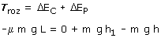
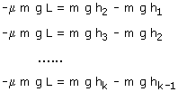
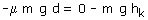
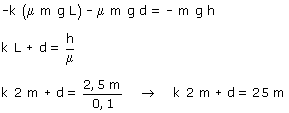

En la primera pasada la bola parte desde una altura h en la rampa izquierda y llega hasta una altura h1 en la rampa derecha. En este recorrido la variación de energía cinética es cero y solo hay trabajo de rozamiento en el tramo horizontal L Aplicando el principio de Conservación resultará:  En la siguiente pasada la bola partirá de la altura h1 en la rampa derecha y llegará hasta una altura h2 en la rampa izquierda y, partiendo de allí, llegará hasta una altura h3 en la rampa derecha y así sucesivamente hasta k veces. Aplicando el principio de Conservación a cada una de estas pasadas se obtendrán resultados análogos al anterior:  En la utlima pasada la bola parte de una altura hk, recorre una distancia horizontal d (Menor que L) y se detiene. Aplicando el principio de Conservación en este caso resultará:  Sumando todas las k expresiones anteriores quedará:  Tenemos una ecuación con dos incógnitas: k
(Número de veces que la bolita recorre el tramo horizontal completo)
y d (Distancia horizontal que recorre en la última pasada). Si la bolita recorre doce veces el tramo horizontal y un
metro más ¿dónde se queda? |